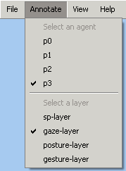
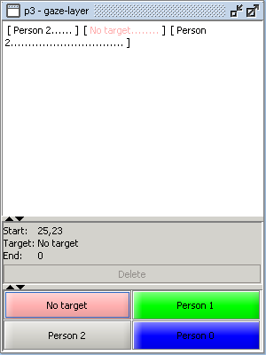
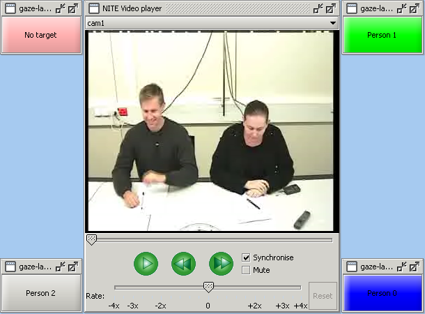
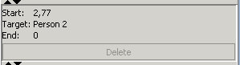
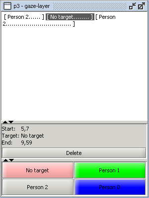

To make new annotations, first make sure that you have selected an agent and a layer from the Annotate menu, which is shown in Figure 1. You can select more than one agent or layer. Your screen will show annotation windows for all combinations of the selected agents and layers. When you don't want to annotate a certain agent or layer anymore, you can deselect the agent or layer in the Annotate menu.

Figure 1: The Annotate menu
Figure 2 shows an example of an annotation window. The title bar shows the agent (p3) and layer (gaze-layer).

Figure 2: An annotation window
The window consists of three parts. The top part is the annotation area, which contains the annotations made before. In Figure 2 there are three annotations. Their targets are Person 2, No target and again Person 2. The dots give an indication of the duration.
Under the annotation area you can see the start time, end time and target of the current annotation, if there is one. In this case the window shows an unfinished annotation. It starts at 25.23 seconds and its target is No target, but the end of the annotation has not been marked yet. The Delete button is only enabled when the current annotation is a complete annotation.
The most important part for making annotations are the target buttons at the bottom. Normally there is one button for each target in the layer. The gaze layer however, is a special layer, because the targets are agents. The Continuous Video Labeling Tool assumes that an agent cannot be the target of his or her own annotations. In this case agent p3 cannot gaze at himself, so there is no button named Person 3, although it is one of the possible targets in the gaze layer.

Figure 3: Target buttons arranged around the video player
The targets of the gaze layer being agents, also means that the buttons are arranged so that they match the positions of the speakers in the current video signal, and an extra set of buttons is created and arranged around the video player, as shown in Figure 3. In this case the current signal is cam1 (selected at the top of the video player). The camera faces persons 3 and 1. At the other side of the table, but not visible in the video, are persons 2 and 0. From the positions of the buttons it should be clear where the agents are seated. At the position of person 3 there is a button named No target. When you select another signal at the top of the video player, the buttons will be rearranged.
The extra set of target buttons around the video player, is only shown when there is exactly one annotation window with agent targets. The target buttons in the annotation windows have the same arrangement however.
To add an annotation start the video. An annotation covers a certain time period and you mark the start and end of it. When the video is at the start point, click the desired target button. You may want to pause the video first. In the annotation window you can see that you marked the start of a new annotation, because it shows the target you clicked and the start time. The end time is still 0, because the end of the annotation has not been marked yet (see Figure 4).

Figure 4: The start of an annotation has been marked
Continue playing the video until the end point of your annotation. Because the annotations have to be continuous, a new annotation should start at this point. Click the target of this new annotation. The end of the previous annotation has been marked and you can see that this annotation is added to the area at the top of the annotation window. The window also shows that you marked the start of a new annotation. If you wish, you can continue to mark the end of this annotation and so on.
The Continuous Video Labeling Tool ensures that the annotations for a certain agent in a certain layer are continuous and they do not overlap each other. When you add an annotation over existing annotations, the program will clear the existing annotations in the time period of the new annotation. In case of complete overlap, this means that the old annotations are deleted. In case of partial overlap, the start or end time of the old annotation is changed, so there is room for the new annotation.
An annotation is only added when you have marked the start of the annotation first and then you mark the end at a later point in the video. If you marked the start of an annotation and decide you do not want to add it after all, you can select an annotation in the area at the top of the annotation window.
To delete an annotation, you must first select it in the area at the top of the annotation window. You can select an annotation by clicking it, but make sure that the annotation window is active. In Figure 5 an annotation has been selected.

Figure 5: Selected an annotation
The annotation window shows the start and end time and the target of the selected annotation. The Delete button is enabled. Click it to delete the selected annotation.
Because the Continuous Video Labeling Tool ensures that the annotations remain continuous, it tries to fill the gap of the deleted annotation. If there is an annotation before the deleted element, its end time will be changed so the gap is filled. If there is only an annotation after the deleted element, its start time is changed to fill the gap. Now there may be two adjacent annotations with the same target. In that case the annotations are merged.